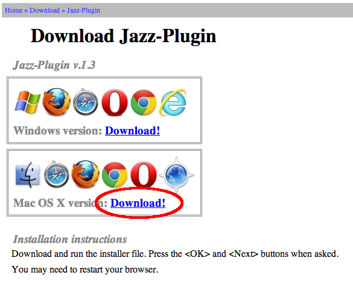
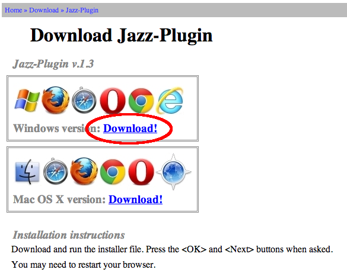

yamaha-webmusic
yamaha-webmusicApps
{kind=link}
歌詞データ送信後、ブラウザ上のキーボードを演奏すると、送信した歌詞のとおりに NSX-1 が歌います。
(Mac/PC に接続した外部 MIDI キーボードを使って演奏することもできます。)
{kind=link}
歌詞データ送信後、ピアノロールの上でマウスをドラッグして音符を入力し、上部の再生ボタン()を押すと、入力した音符のとおりに NSX-1 が歌います。
{kind=link}
しゃべった内容を音声認識機能を使ってテキスト化し、そのテキスト通りに NSX-1 がしゃべります。(ひらがなのみに対応)
※本アプリケーションのご使用はお使いのコンピュータがインターネットへの接続されている必要があります。
動作環境
- Mac または PC
- eVY1 SHIELD (NSX-1搭載)
- マイクロUSB ケーブル (eVY1 SHIELDには付属していません)
- スピーカーまたはイヤホン（ミニプラグ）
{kind=link}
{kind=link}
- Mac OS X 10.6 以降
- Windows 8/7/Vista/XP
 Google Chrome Canary Version 32 以降 ダウンロード
Google Chrome Canary Version 32 以降 ダウンロード
（ flagsの変更が必須、 Jazz-Pluginのインストールが必須） Google Chrome Version 30 以降 ダウンロード
Google Chrome Version 30 以降 ダウンロード
（ Jazz-Pluginのインストールが必須）
- OS
- ブラウザ
セットアップ
- eVY1 SHIELD を Mac に接続
- eVY1 SHIELD にスピーカー（またはヘッドセット等）を接続
- Google Chrome Canary のインストールと起動
- chrome://flags の設定 (初回利用時にのみ必須)
- Apps にアクセス
Google Chrome Canaryを起動する前に接続をしないと認識されません。
eVY1 SHIELDにはスピーカーを内蔵していませんので、必ず接続してください。
Google Chrome Canaryのダウンロードはこちらから行ってください。(Version 32以降をお使いください。)
chrome://flags/#enable-web-midi をアドレスバーに入力後、「Web MIDI APIを有効にする」の欄にある 有効にする をクリックし、Google Chrome Canary を再起動してください。
こちらから Apps へアクセスしてください。
- eVY1 SHIELD を Mac に接続
- eVY1 SHIELD にスピーカー（またはヘッドセット等）を接続
- Google Chrome のインストールと起動
- Jazz-Soft.net から Jazz-Plugin のダウンロードとインストール
- Google Chrome の起動
- Apps にアクセス
Google Chromeを起動する前に接続をしないと認識されません。
eVY1 SHIELDにはスピーカーを内蔵していませんので、必ず接続してください。
Google Chromeのダウンロードはこちらから行ってください。
Jazz-Pluginをこちらからダウンロードし、インストール。

{kind=link}
起動済みの場合は一度再起動をしてください。
こちらから Apps へアクセスしてください。
- eVY1 SHIELD を PC に接続
- eVY1 SHIELD にスピーカー（またはヘッドセット等）を接続
- Google Chrome のインストール
- Jazz-Soft.net から Jazz-Plugin のダウンロードとインストール
- Google Chromeを起動
- Apps にアクセス
Google Chromeを起動する前に接続をしないと認識されません。
eVY1 SHIELDにはスピーカーを内蔵していませんので、必ず接続してください。
Google Chromeのダウンロードはこちらから行ってください。
Jazz-Pluginをこちらからダウンロードし、インストールしてください。

{kind=link}
起動済みの場合は再起動をしてください。
こちらから Apps へアクセスしてください。